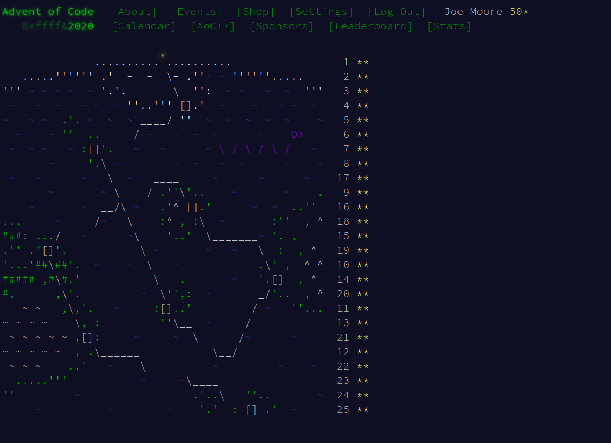

Projects
Over the Course of my degree I have engaged in a number of curricular and extra-curricular software development and coding projects:
Warwick Sport Register
Due to COVID restrictions in the academic year 2020/21 it was necessary to book onto all sports sessions. However, the people running the sessions were not given a register of who had booked on. Consequently, I set about making a program that could compile a register from forwarded email confirmations. I, therefore, developed a Python script to receive forwarded email confirmations from people booked onto a session. The script would then validate if the email were a Warwick Sport email, and then if so, extract the name of the attendee and the date. This compiled into a register was then exported to a website that the event runners could access.
Code for the website and register script can be found here.
Merge Sort Teaching Tool
During my first year I used processing and java to create a teaching tool which could explain, demonstrate and customise the merge sort algorithm. This was designed so that anyone could be taken through a step by step guide of the algorithm but also use their own numbers so they could see how the sorting differed in each example. The software allowed the use to pause and step back and forward in the visualisation, as well as giving step by step explanations of the algorithms next steps.
It can also be found of GitHub.
Advent of Code
In 2020 I participated in advent of code each day. My solutions are again on my GitHub
The code for the majority of my coursework cannot be given out, if, as a prospective employer, you are interested in seeing it please drop me an email. The following are some of my completed courseworks:
| Coursework | Mark |
|---|---|
| Maze Generation and Solving in Java including rudimentary machine learning and implementation of the A* algorithm | 82% |
| Classic Pong Arcade game coded on an Oscilloscope wrtten in Assembly code and C | 78% |
| Database System with a range of advanced SQL commands | 73% |
| Multi Threaded Packet Sniffer in C with built in detection of SYN Attacks, Arp Poisoning, and Blacklisted IPs | 86% |
| Cyber Security Penetration Testing and isolation of key vulnerabilities of a banking website alongside the creation of automated tests | 87% |